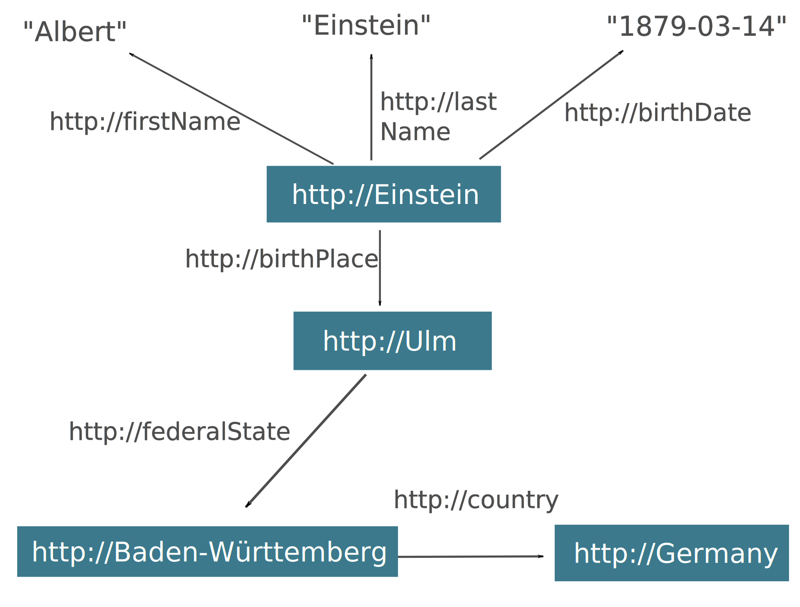
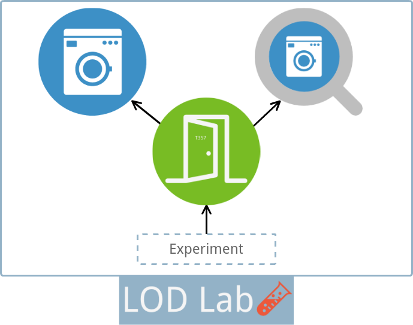
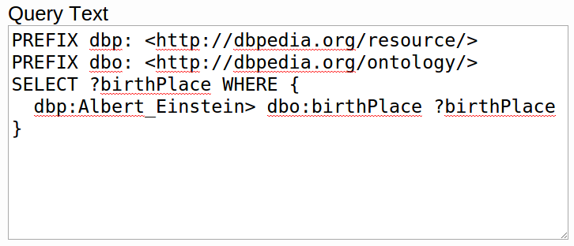
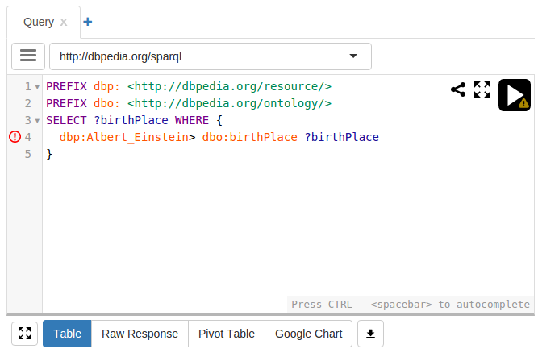
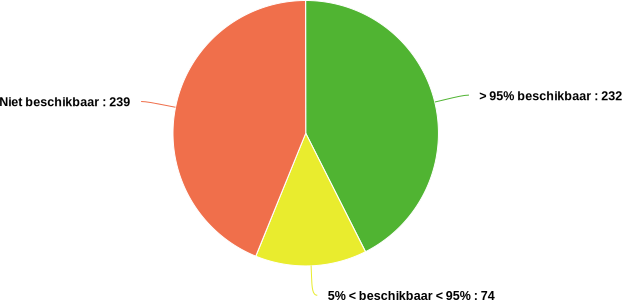

Publishing and Consuming
Linked Data
Optimizing for the Unknown

Laurens Rietveld

"Albert Einstein"
↓
http://dbpedia.org/resource/Albert_Einstein"Heeft geboorteplaats"
↓
http://dbpedia.org/ontology/birthPlace"Ulm"
↓
http://dbpedia.org/resource/ulm

Problemen
Probleem 1: Ongeldige Linked Data
Goed:⟨http://Einstein⟩ ⟨http://birthPlace⟩ ⟨http://Ulm⟩ .http://Einstein⟩ ⟨http://birthPlace⟩ ⟨http://Ulm⟩ .Probleem 1: Ongeldige Linked Data
LOD Laundromat
36 miljard feiten, 650.000 datasets

Probleem 2: Vinden van Linked Open Data
- In welke datasets komt Einstein voor?
- In welke datasets staat geografische informatie?
- Wat voor netwerk structuur hebben de datasets?
Probleem 2: Vinden van Linked Open Data
LOD Laundromat Meta-Dataset
Probleem 3: Linked Open Data Onderzoek op grote schaal
Probleem 4: Bevragen van Linked Data
Probleem 4: Bevragen van Linked Data
Probleem 5: Linked Data Hosting
546 SPARQL Endpoints
Probleem 5: Linked Data Hosting
+
| Gzip | |
| Header - Dictionary - Triples | |
 |
Linked Data Fragments |
Probleem 5: Linked Data Hosting
SampLD
- Datasets kleiner maken (sampling)
- Relevantie van triples meten d.m.v. netwerk analyse
- Je kunt soms tot 95% van de dataset weggooien
In het kort
Een web van data ...
- die makkelijker te bevragen is
- op grotere schaal te hosten is
- beter doorzoekbaar is.
Publishing and Consuming
Linked Data
Optimizing for the Unknown